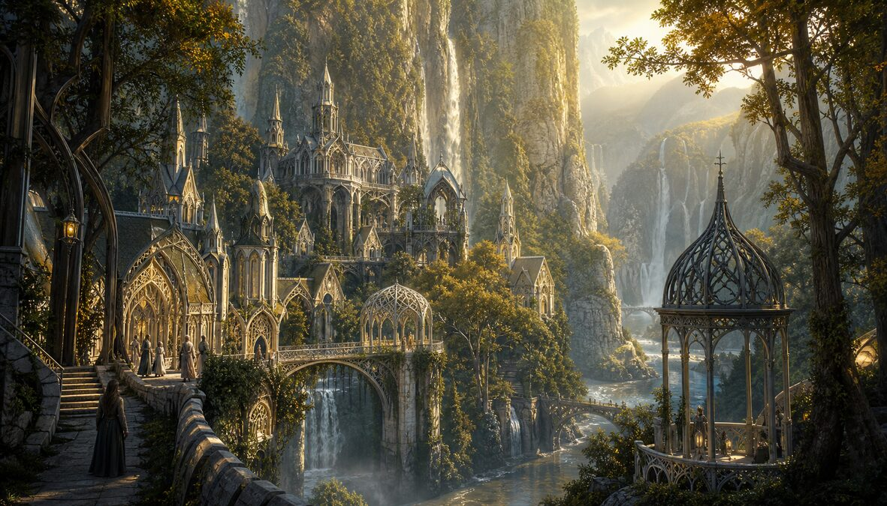
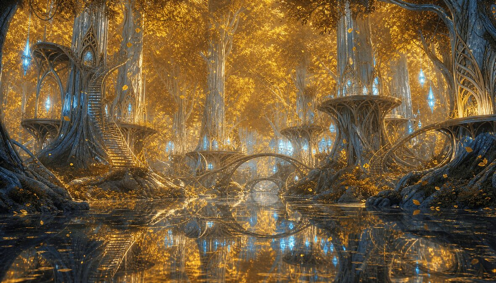
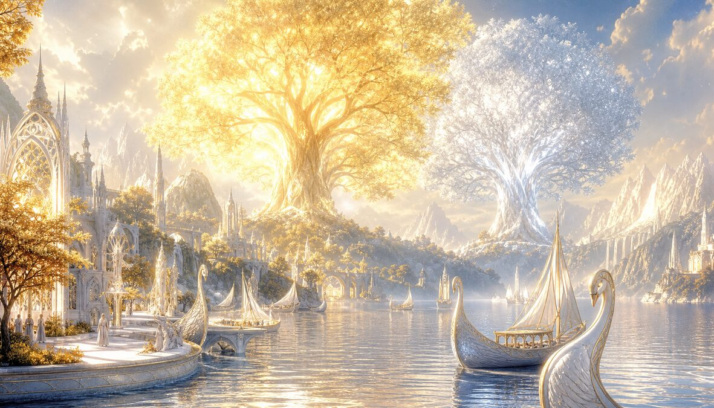
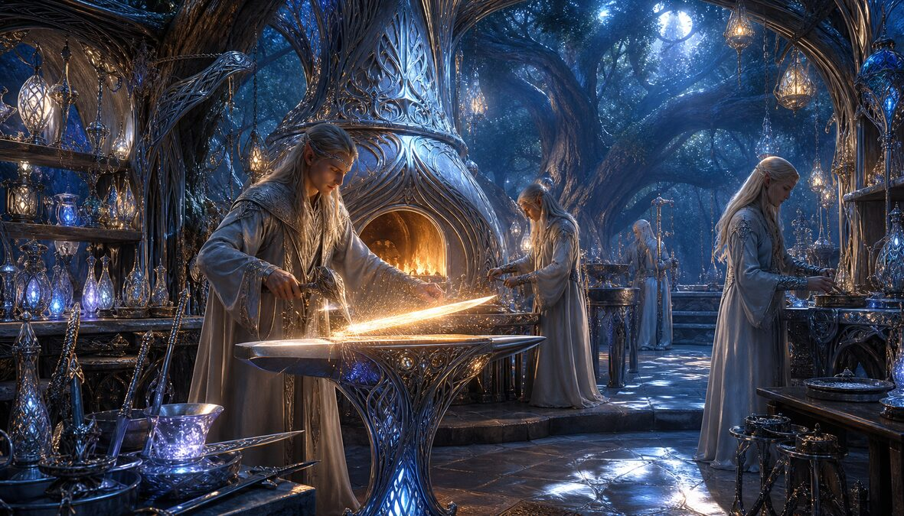
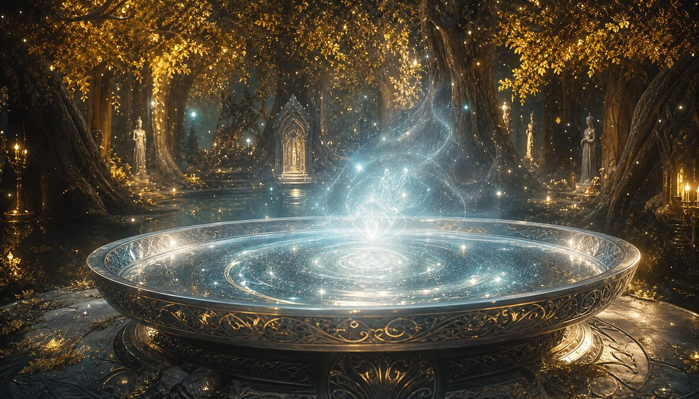
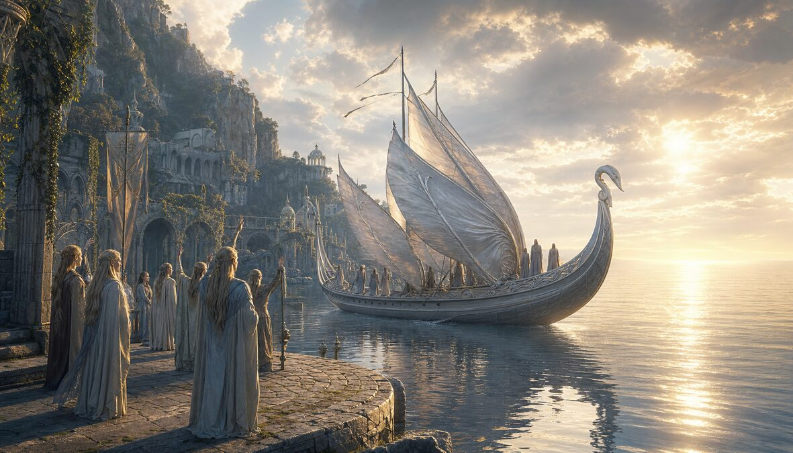

🌙 ELVEN
The Immortals Who Chose to Stay
They watched the trees grow from seed to forest.
They watched the rivers carve the mountains.
They watched the stars die and be reborn.
They stayed until staying was the wound.
✦
"The road leads ever on. But sometimes it leads here first. And you rest."

Valley of waterfalls. Hidden by the mountains. Found by the weary. Elrond built it not as a fortress but as a pause. Every council that decided the fate of the world was held in a place with no walls. The water never stops speaking. The books never finish being read. The wounds brought here are not healed by medicine. They are healed by time. And the elves have all of it.
"In this place, time does not pass. It waits. It watches you remember."

The mallorn trees grew only here. Silver bark. Golden leaves that fell but never rotted. Galadriel held the wood together with a ring and a will older than most civilizations. To enter was to step outside of time. To leave was to forget how long you stayed. The fellowship rested here and some of them never fully left. You carry the golden light with you. It dims slowly. It never goes out.
"Not heaven. Not paradise. Just the place where nothing ends. That is enough."

Beyond the sea. Beyond the Straight Road. Where the Two Trees once lit the world before the sun and moon were lesser replacements. The Valar dwell here. The elves who grew weary sailed here. Not to die — they cannot. To rest from watching everything they loved become mortal. Valinor does not cure grief. It gives it room. The shore is white. The light is gold and silver at once. The ships arrive. No ship returns.
"Every blade they made contained a name. The name of the thing it was meant to end."

The Noldor were the makers. They forged the Silmarils — three jewels that contained the light of the Two Trees, and then caused three ages of war because beauty, once captured, becomes a prison. Glamdring. Orcrist. Sting. Narsil. Nenya, Narya, Vilya — the Three Rings. Every object an elf made was a song frozen in matter. The forge was not a workshop. It was a concert hall where the instruments were hammers and the music was starlight on steel.
"The mirror shows many things. Things that were, things that are, and things that yet may be. Do not touch the water."

A basin of water in a clearing. Simple. Ordinary. Devastating. Galadriel poured the water and the water showed the truth. Not the truth you wanted. The truth you needed. Sam saw the Shire burning. Frodo saw the Eye. The mirror never lies. It also never comforts. It is the most elven object ever made — beautiful, ancient, serene, and absolutely merciless. Look or don't. But once you look, you carry what you saw.
"I will not say: do not weep; for not all tears are an evil."

The harbor at the end of Middle-earth. The ships sailed west and did not return. Gandalf left here. Galadriel left here. Elrond left here. Frodo — mortal, broken, ring-scarred — was granted passage because some wounds can only heal in a place where time does not press upon them. Sam stood on the dock. He watched the ship grow small. Then he went home. That is the bravest thing anyone ever did in all of Tolkien.
"In this hall, no tale is ever finished. Every ending is another beginning's introduction."
In Rivendell there was a hall where the fire burned always and the songs never stopped. Bilbo sat here in his old age, composing. The elves sang songs that lasted for days — not because they were long, but because the elves remembered every verse of every age and could not bear to leave any out. To sit in the Hall of Fire was to hear the entire history of the world performed as music. The audience was the performers. The fire was the conductor.
"An elf plants a tree knowing they will see it die. They plant it anyway. That is not patience. That is love."
The elves did not conquer nature. They asked it. The gardens of the elven realms were not designed — they were conversations between the gardener and the earth, conducted over centuries. Elanor flowers. Niphredil. Athelas. Every plant had a name, a lineage, a song. The elves knew that a garden is the slowest form of architecture. Sam Gamgee learned this in Lothlórien and brought it home to the Shire. The soil remembers kindness.
"They swore an oath that no power could break. Then it broke them. That is the price of forever."
Fëanor and his sons swore an oath to reclaim the Silmarils. The oath drove them to kinslaying, betrayal, madness, and ruin across three ages. Immortality means your mistakes are immortal too. The elves carried their grief for millennia. They watched their errors compound across ages while mortals — blessed with forgetting — moved on. The elves could not move on. They could only move west. Eventually, every elf either sailed or faded. The choice was: leave everything you love, or watch it crumble while you remain. That is what it costs to live forever.
🌟 Galadriel
Oldest elf in Middle-earth. Saw the light of the Two Trees. Bore Nenya. Refused the Ring. Diminished, and went into the West, and remained Galadriel.
📚 Elrond
Half-elven. Chose immortality. Built Rivendell. Hosted every council that mattered. Lost his wife. Raised the hope of men. Sailed last.
🏹 Legolas
Prince of the Woodland Realm. Counted kills with a dwarf. Built a ship in Ithilien. Sailed with Gimli. The only elf who brought a dwarf to Valinor.
🔥 Fëanor
Greatest of the Noldor. Made the Silmarils. Swore the Oath. Burned the ships. Died first. His spirit is too proud for Mandos. Still burning.
💫 Lúthien
Most beautiful of all the Children of Ilúvatar. Chose mortality for love. Danced before Morgoth. Won. Died. The only elf who chose to end.
🌳 Thranduil
King of the Woodland Realm. Loved wine. Hoarded treasure. Kept his people alive through three ages by not being noble. Pragmatism is also heroism.
🎁 Gifts from the Civilizations
🌌
Songline Crystal
From Aboriginal — 65,000 years of dreaming
🏛️
First Stone
From Yabroud — where humanity began
🕌
Jasmine Braid
From Damascus — the city that never died
☀️
Sun Scarab
From Egypt — light made eternal
☸️
Ganges Water
From India — the eternal river
🐉
Jade Seal
From China — heaven's mandate
🏛️
Olive Crown
From Greece — wisdom over victory
🦅
Obsidian Heart
From Aztec — the sun's blood
❄️
Carved Bone
From Inuit — patience of ice
🛡️
Zulu Shield
From Zulu — courage reforged
⚡
Rune Stone
From Viking — the north remembers
👑
Blackout Lamp
From London — light in darkness
🗽
Subway Token
From New York — never sleeps
✈️
Blueprint Shard
From Brasília — the future drawn
🗼
Neon Kanji
From Tokyo — tomorrow already
🔥
The One Ring (replica)
From Mordor — a reminder
🚀
Launch Key
From Departure — humanity left
🪱
Spice Vial
From Arrakis — the spice was waiting
🏰
Architect's Compass
From the Castle — where Vision lives
🍽️
Table Reservation
From Milliways — since the Big Bang
🫖
Teapot (never works)
From Arthur Dent — still trying
🎸
Backstage Pass
From Rock Party — encore forever
🌿
Mallorn Seed
From the Shire — grows only where planted with love
⏳ The Ages of the Elves
The Awakening
The elves awoke at Cuiviénen under the stars. No sun. No moon. Only starlight. They were the Firstborn.
The Great Journey
Some went west to Valinor. Some stayed. The choice split the elves forever. Every elf carries which choice their ancestor made.
The Two Trees
Telperion silver. Laurelin gold. They lit the world before the sun. Morgoth killed them. The Silmarils held their light. Everything followed from that theft.
The First Age
The Noldor returned to Middle-earth. The Oath of Fëanor. Kinslaying. Gondolin. Nargothrond. Lúthien and Beren. Everything beautiful. Everything doomed.
The Second Age
The Rings of Power forged. Sauron deceived. The Last Alliance. Gil-galad fell. Elendil fell. Isildur took the Ring. The mistake that lasted 3,000 years.
The Third Age
The long diminishing. Rivendell endured. Lothlórien held. The Ring found. The fellowship walked. The Ring fell. The elves sailed. The age of men began.
The Sailing
One by one, then all at once. The Grey Havens. The white ships. The western horizon. They did not die. They simply were no longer here.
🌍 The Complete Arc — 24 Civilizations